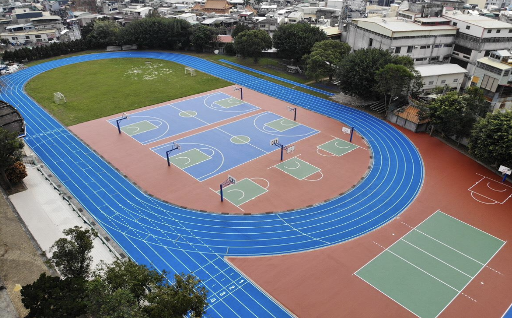
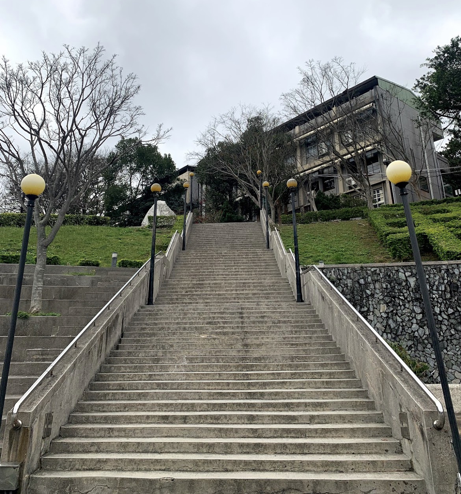
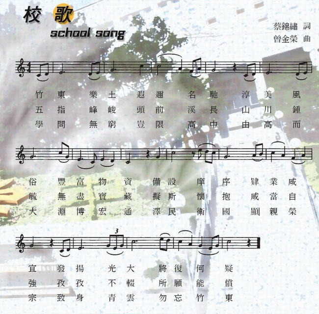
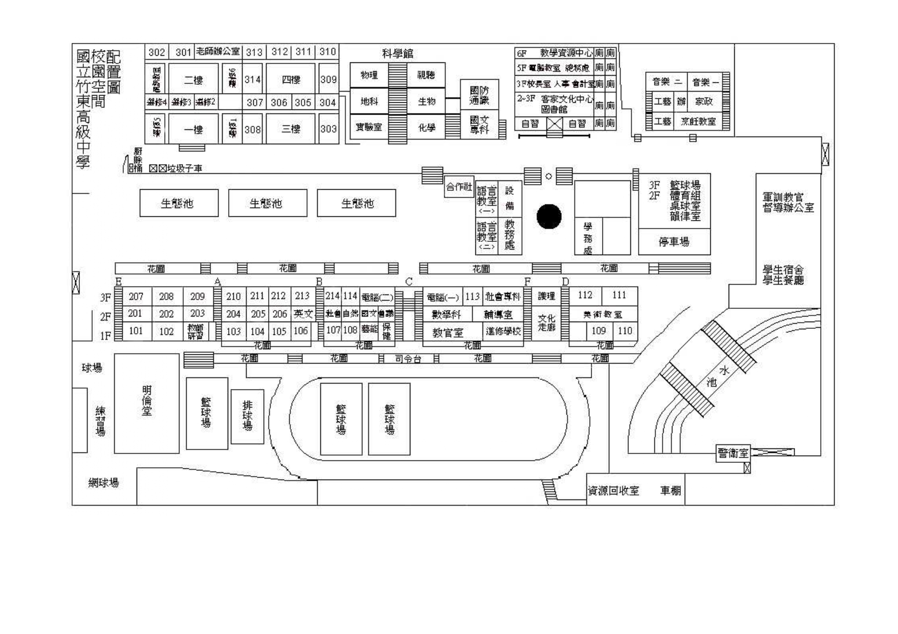

竹東高中空拍影片
關於東中
國立竹東高級中學擁有豐富的教學資源和卓越的教師團隊，以培育學生的綜合素養為校訓。致力於提供一個多元且包容的學習環境，讓每一位學生都能夠發揮自己的潛能，追求卓越。在竹東高中，學生們不僅學習學術知識，還注重品德和人格的培養。我們鼓勵學生積極參與課外活動和社會服務，培養他們的領導能力和團隊合作精神。此外，我們還提供豐富多彩的課程和實踐機會，讓學生在興趣和專長的領域中得到全面的發展。竹東高中的教育理念是將學生培養成為具有國際競爭力的未來領袖。我們鼓勵學生勇於挑戰自我，勇敢追求夢想，培養他們的創新精神和解決問題的能力。我們相信，通過不懈的努力和持之以恆的奮鬥，每一位竹東學子都能夠成為未來社會的中流砥柱，為國家和社會的發展做出積極的貢獻。

校園特色
來到竹東高中的校門口，首先映入眼簾的是這座氣勢磅礡的超長階梯。這不僅是一條通向學校大門的通道，更是承載著學生們的足跡和回憶。離開東中時，這沒有盡頭的樓梯成了所有東中人共同的回憶。每一階階梯都承載著我們的青春歲月，見證著我們的成長和奮鬥，無論是匆匆忙忙趕著上課，還是悠閒地和朋友閒聊放學後，這些瞬間都在我們心中留下了深刻的痕跡。

校歌

校園平面圖
